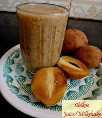
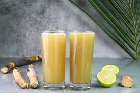

Pineapple Juice
Pineapple Juice
Tropical pineapple juice that's sweet and tangy, ideal for a refreshing drink.
Ingredients: Pineapple, Sugar
Preparation Time: 15 minutes
Preparation: Blend pineapple with sugar until smooth. Serve chilled.

Sapota Juice
Sapota Juice
A sweet and creamy juice made from ripe sapota, also known as chiku.
Ingredients: Sapota, Milk, Sugar
Preparation Time: 15 minutes
Preparation: Blend sapota with milk and sugar until smooth. Serve chilled.

Sugarcane Juice
Sugarcane Juice
Fresh and naturally sweet sugarcane juice, a traditional favorite.
Ingredients: Sugarcane
Preparation Time: 10 minutes
Preparation: Juice the sugarcane and serve chilled.